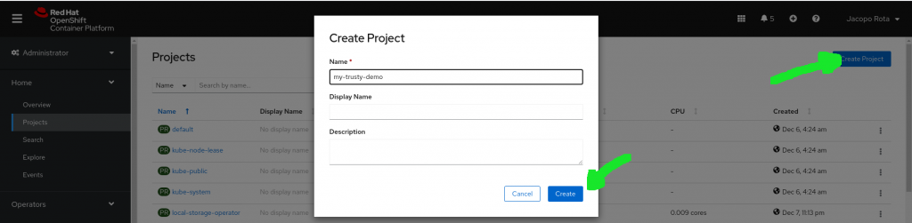
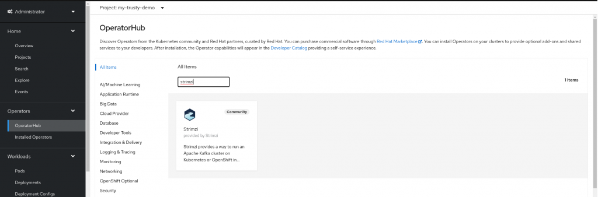
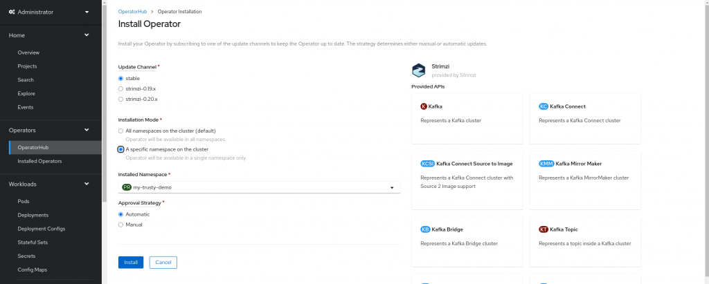
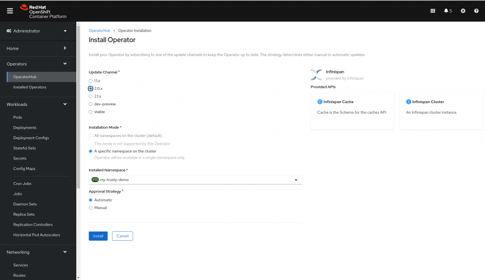
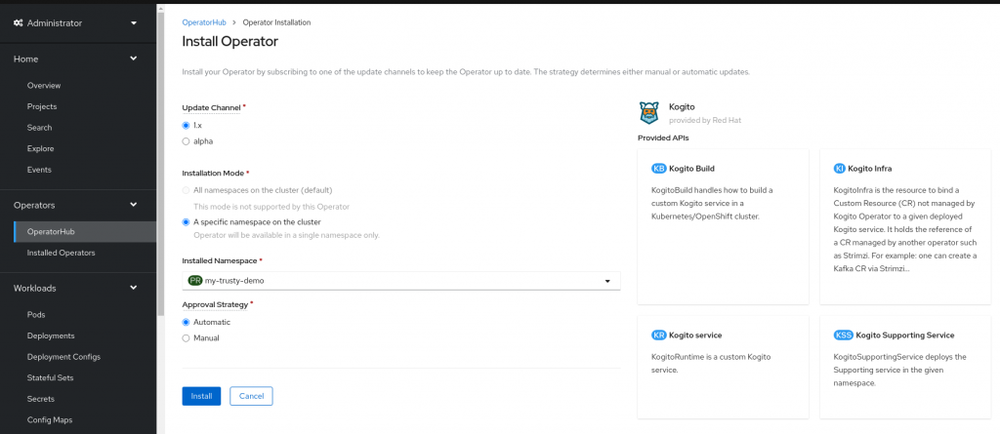
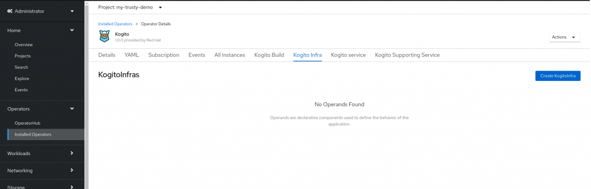
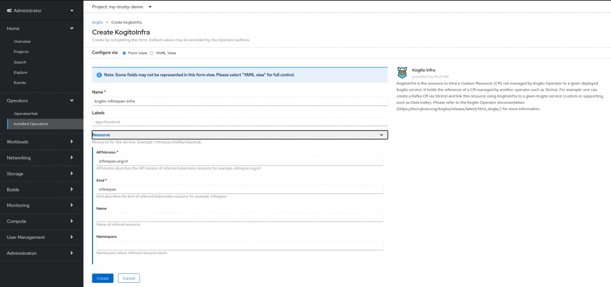
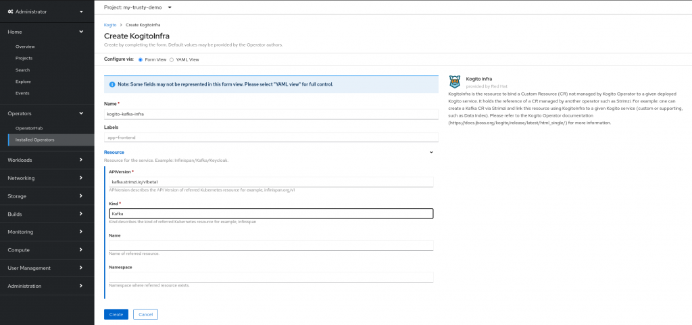
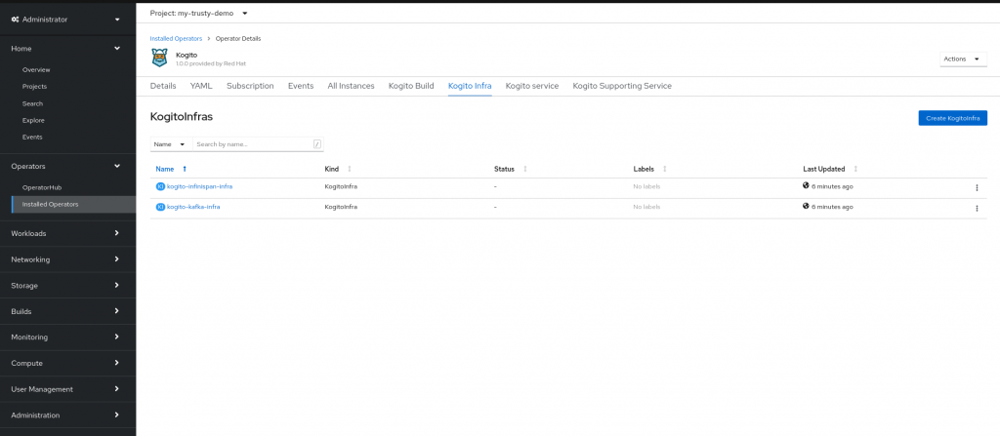

How to integrate your Kogito application with TrustyAI – Part 2
In the first part https://blog.kie.org/2020/12/how-to-integrate-your-kogito-application-with-trustyai-part-1.html we have created a Kogito application and configured it to make it work with the TrustyAI infrastructure.
In this second part, we are going to talk about the setup of the OpenShift cluster (https://docs.jboss.org/kogito/release/latest/html_single/#chap-kogito-deploying-on-openshift).
The first step is to create a new project, which we call my-trusty-demo.

As you can see in the TrustyAI architecture below, a kafka and an infinispan instance are needed to process the events and store the information.

There are two options available:
1) You can setup, configure and deploy your instance of kafka and infinispan, and then bind them to the Kogito services (you can find an example here using kubernetes https://github.com/kiegroup/kogito-examples/tree/stable/kogito-quarkus-examples/trusty-demonstration).
2) Use the KogitoInfra custom resource that the Kogito operator offers. In this way the Kogito operator will take care of deploying and managing the instances for us. For the sake of the demo, we are going to use this one.
Given that we would like to use the KogitoInfra custom resource, the Strimzi and Infinispan operators have to be installed in the namespace. Go to Operators -> OperatorHub and look for strimzi.

And install it under the namespace my-trusty-demo.

And do the same for Infinispan, paying attention to install the version 2.0.x which is the only one supported at the moment.

Now you can install the Kogito operator from OperatorHub as well.

Let’s create the KogitoInfra custom resource: go to Operators -> Installed Operators and then click on Kogito.
In the upper tab select Kogito Infra and then on the button Create KogitoInfra.

According to the official documentation https://docs.jboss.org/kogito/release/latest/html_single/#_kogito_operator_dependencies_on_third_party_operators , we need to create the following resources
apiVersion: app.kiegroup.org/v1beta1
kind: KogitoInfra
metadata:
name: kogito-infinispan-infra
spec:
resource:
apiVersion: infinispan.org/v1
kind: Infinispan
---
apiVersion: app.kiegroup.org/v1beta1
kind: KogitoInfra
metadata:
name: kogito-kafka-infra
spec:
resource:
apiVersion: kafka.strimzi.io/v1beta1
kind: KafkaAnd this can be done also using the OpenShift console:


Once they are created, you see them in the KogitoInfra tab

The OpenShift cluster has been set up, and we are ready to deploy the TrustyAI infrastructure together with the Kogito application we created in the first video.
The next part can be found here https://blog.kie.org/2020/12/how-to-integrate-your-kogito-application-with-trustyai-part-3.html